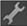
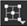
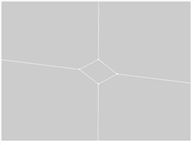

突出显示的脸。
要编辑顶点:
| 1。 | 激活 编辑模式 通过选择  从 ModelBuilder 工具栏中。 |
| 2. | 将选择模式菜单设置为 选择顶点  在 ModelBuilder 工具栏中，选择对象上的一个或多个顶点。 |
| 3. | 根据需要编辑您的选择: |
• 要平移、旋转或缩放选定顶点，请拖动显示在其上的变换控制柄。要移动变换控制柄的轴心点，请按 Ctrl / Cmd Alt 在变换覆盖的中心拖动时。
提示: 如有必要，您还可以使用查看器顶部的控件来设置变换控制柄的初始位置和对齐方式 (即，每当您更改选择时使用的位置)。有关更多信息，请参见 设置平移、旋转和缩放的初始动作中心 .
• 要雕刻选定的顶点，请在它们上单击鼠标右键并选择 雕刻 。查看器窗口周围出现彩色边框，表示操作正在进行。单击边或顶点开始雕刻。所有周围的面都以红色突出显示。在高亮显示的面内部的任何地方单击，或在高亮显示的面的边或顶点上单击，以在上一个顶点和刚刚单击的位置之间雕刻边。
|
|
|
| 突出的脸。 |
一个新的边缘雕刻在里面
突出显示的脸。 |
要雕刻一个写意的边缘，按住 Ctrl / Cmd 转变 和拖动。
• 要挤出选定的顶点，请选择 挤出 从右键单击菜单并拖动。这会将选定的顶点拉伸到三维多边形中。ModelBuilder 创建面来完成对象，例如从顶点创建矩形棱锥。
|
|
|
| 选定的顶点。 | 挤出选定的顶点。 |
• 要倒角选定的顶点，请选择 斜面 从右击菜单中。
查看器窗口周围出现彩色边框，表示操作正在进行。
在查看器的顶部，使用 相对插图 要定义沿周围边缘开始倒角的距离，请执行以下操作: 0.0 意味着没有距离 1.0 意味着在边缘的另一端。默认为 0.1 ,这意味着倒角从沿着每个边缘向后的 1/10 开始。
设置 圆形水平 重复初始倒角的次数，有效地舍入边缘。的值 0 只是做最初的斜面，一个值 1 斜面初始斜面的输出; 值 2 斜面初始斜面的斜面，依此类推。
当你对你输入的值感到满意时，按 返回 应用斜面。
|
|
 |
| 选定的顶点。 | 倾斜选定的顶点。 |
倒角类似于挤出选定的顶点，只是生成的多边形具有平滑的边和角。你可能想使用倒角来给你的模型添加真实感，因为现实世界的物体很少有完美的锐角。
• 要删除选定的顶点，请选择 删除顶点 从右击菜单 (或按 删除 )。
请注意，您只能删除连接不超过两条边的简单顶点。
|
|